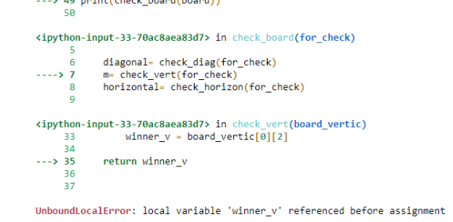

אז כתבתי את הפונקציה שבודקת את כל מצבי הניצחון האפשריים, ובהתאם להוראות כתבתי כמה שיותר תתי פרנקציות. אז אחרי שהיו לי פונקציות למקרה של ניצחון אנכי, נצחון אופקי ונצחון באלכסון, הרצתי את הפונצקיה הגדולה. בתוך הפונקציה הגדולה הרצתי את הפונקציות שציינתי והשמתי את ערך ההחזרה שלהן לתוך משתנים ואז הרצתי בדיקה לגבי האם המשתנים האלה הם איקס או עיגול כדי לבדוק מי מנצח. חשוב לציין שבדקתי את כל אחת מהפונקציות בנפרד, והן מחזירות את הערכים הצפויים מהן לפי מצב הלוח, כלומר כשמריצים אותן הן מחזירות איקס, עיגול, או תו ריק בהתאם.
עכשיו, כשאני מריץ את הפונקציה הראשית, אני מתחיל מלהשים את ערכי ההחזרה של הפונקציות הנפרדות בתוך משתנים ואז מריץ תנאים לבדיקת ערכי המשתנים האלה כדי להחליט מי ניצח (אם בכלל). ואז פייתון צועק לי שאני קורא למשתנה לפני שהשמתי אותו. בהתחלה חשבתי שאולי זה קשור לכך שמדובר בפונקציה בתוך פונקציה, אבל למעשה גם תת הפונקציות שכתבתי לגבי מצבי הניצחון מורכבות בעצמן מתתי פונקציות, כך שלא סביר שזה העניין (אחרת הייתי נתקל בבעיה הרבה קודם, בבדיקות הפרטניות. בקיצור, אני ממש מבולבל ואשמח להכוונה לגבי המצב בו נתקלתי.
לא הבנתי למה התכוונת. רק כדי להסביר, מעל כל הפונקציות יש לי משתנה בשם board שמכיל את הלוח. כשאני מריץ winner = check_board(board) אני בעצם מריץ את הפונקציה ומשים את התוצאה שלך בתוך winner ואז מדפיס את winner לצרכי בדיקה (או לפחות זה מה שחשבתי שעשיתי). לכן לא ברור לי מה הבעיה (השורה האחרונה רק מדפיסה את המשתנה).
עכשיו יותר מובן - שים לב שאתה נותן למשתנה את אותו השם של הפונקציות שלך ואז אתה מבצע דריסה שלהם.
mbrodsky
אבל חשבתי שאם אני כותב את זה ככה אז זה פשוט משתנה וזהו, בלי קשר לפונקציה. אשמח להסבר על מה בעצם קרה כשנתתי למשתנה אותו שם כמו לפונקציה.
Yam
ברגע שפייתון באה להריץ פונקציה, היא שומרת בצד את שמות כל המשתנים ש"חיים" בתוך הפונקציה.
בשורה של ההשמה, פייתון מסתכלת קודם על צד ימין. היא יודעת שבפונקציה הזו יש משתנה בשם horizontal, אבל היא מחפשת ורואה שעדיין לא השמת לתוכו. אז מבחינת פייתון – הולך להיות משתנה כזה בהמשך הפונקציה, אבל עדיין לא ביצעת לתוכו השמה. ולכן ה־UnboundLocalError – אתה מנסה לקרוא למשתנה שמבחינתה יהיה בו ערך בהמשך, אבל כרגע עדיין לא קיים.
היא לא מחפשת את הפונקציה החיצונית מכיוון שהיא “יודעת” שבתוך הפונקציה הפנימית הוגדר משתנה בשם horizontal, ולו היא נותנת את הקדימות
2 לייקים
mbrodsky
עכשיו שיניתי את השמות (הוספתי 1 בסוף רק לצורך הבדיקה) וזה עובד. אבל אני חש שעדיין לא הגעתי להבנה מלאה. מהתשובה שלך הבנתי שפייתון מסתכלת קודם על צד ימין, אז היא רואה את שם הפונקציה horizontal. אז מבחינתה גם קיים משתנה כזה? ואז כשבצד שמאל קראתי למשתנה אחר בשם הזה אז היא לא יודעת מה לעשות, אבל אם היא רואה משתנה בשם אחר שעוד לא הוגדר בו כלום היא סבבה עם זה (תודה על ההסברים והסבלנות)?
מסתכלת על כל שמות המשתנים שהולכים להיות מוגדרים במהלך ריצת הפונקציה,
שומרת את השמות שלהם בצד. “אלו משתנים מקומיים ואני צריכה להתייחס אליהם ככאלו”.
בהשמה, כמו בכל השמה, פייתון לא מתייחסת לאגף שמאל עד שאגף ימין “פתור”. היא ממירה את board1 ללוח שלך, ואז באה לקרוא ל־horizontal עם board1 כפרמטר.
אבל horizontal לפי סעיף 2 היא משתנה מקומי בכלל!
אבל horizontal “המקומי” עדיין לא הוגדר בתוך הפונקציה, אין לו ערך כרגע.
סתירה, קריסה, UnboundnLocalError
2 לייקים
henking21
גם אני מקבלת את התקלה הזו… , שיניתי את כל השמות בקוד כך שאין דברים שדומים זה לזה, ועדיין אותה תקלה… אשמח להכוונה
aviadamar
את יכולה לצלם את השגיאה שאת מקבלת ?<
henking21
הנה השגיאה:

orpazf
את מגדירה את המשתנה שאת מעוניינת להחזיר רק אם את נכנסת לאחד מהתנאים. כלומר, ייתכן שיהיו מקרים בהם לא תגדירי את המשתנה ובכל זאת תנסי להחזיר אותו, וזו שגיאה


{kind=link}
{kind=link}